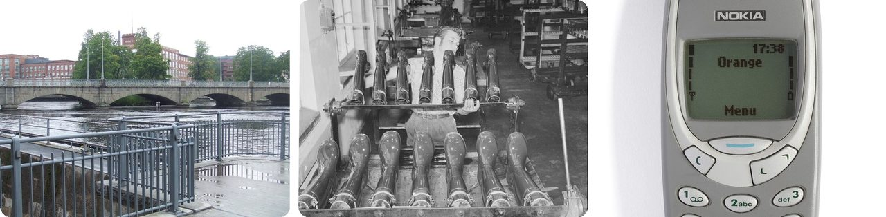
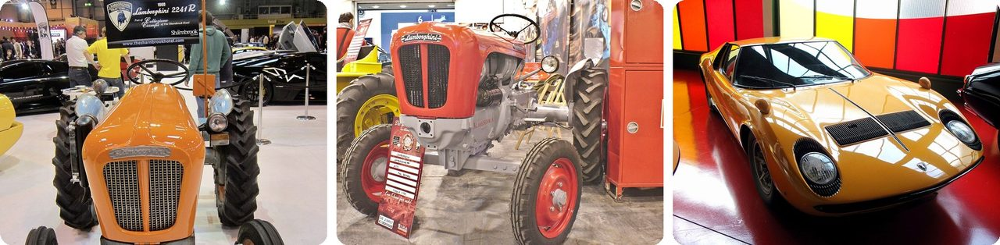
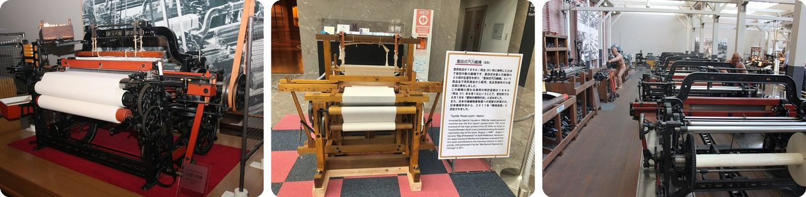
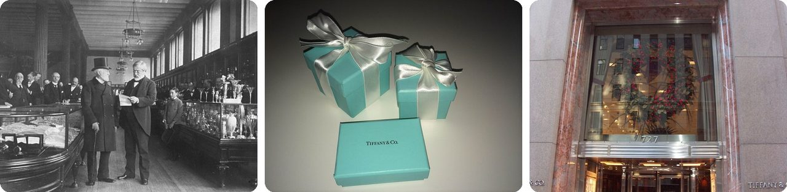
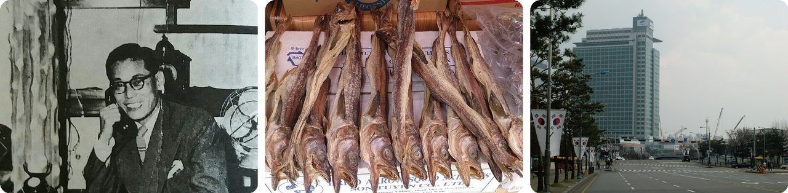
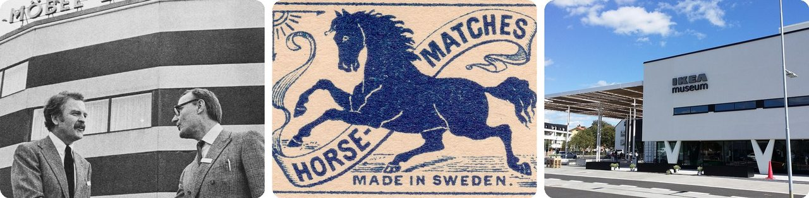
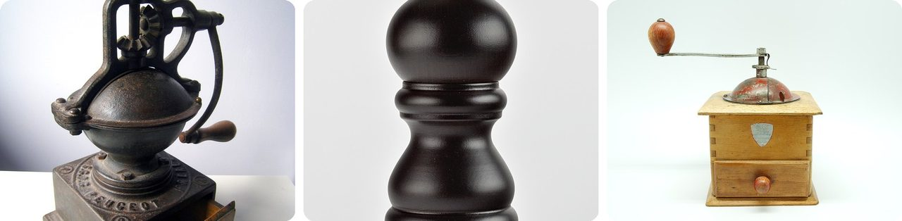
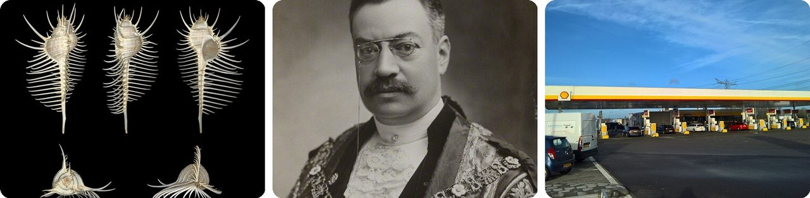
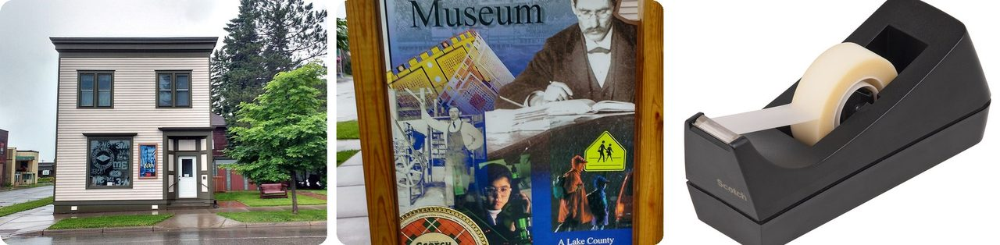
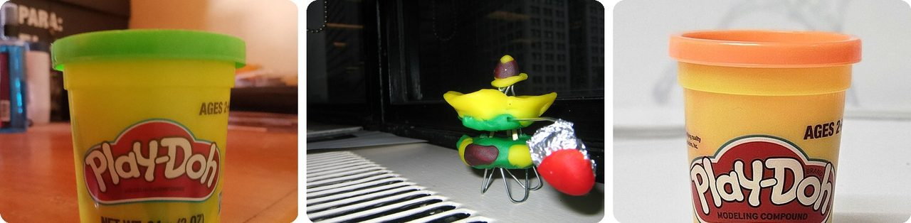

🌍 Top 10 Companies That Started Out Different
Oct 21, 2026
1. 🇫🇮 Nokia started out as a paper mill

In 1865, a mining engineer named Fredrik Idestam built a wood pulp mill (a factory that grinds trees into the mush used for paper) on the rapids in Tampere, Finland. Three years later he opened a second mill near a small town called Nokia, about 15 km away.Nokia then got tangled up with two other companies. Finnish Rubber Works made galoshes and used the town's name on its products, and after World War I it bought the nearly bankrupt Nokia company. In 1932 it also bought Finnish Cable Works, which made telephone wires.
In 1967 the three merged into Nokia Corporation, which made paper, car tires, rubber boots, cables and TVs, all under one name. Mobile phones only came later.
Your old Nokia phone has a family tree full of rubber boots.
2. 🇮🇹 Lamborghini built tractors before supercars

Ferruccio Lamborghini was the son of grape farmers in northern Italy. In 1948 he started making tractors, and Lamborghini Trattori grew fast as Italy rebuilt after World War II.Rich from tractors, he bought a Ferrari in 1958. But its clutch (the part that connects the engine to the wheels) kept wearing out, and he had to keep driving it back to the Ferrari factory for repairs. He complained to Enzo Ferrari himself and was brushed off.
So he decided to build the car he wanted. In 1963 he started Automobili Lamborghini. He also knew that putting parts like the ones from his tractors into a fancy sports car could earn him three times the profit.
Basically, a tractor maker got bad customer service and answered with a supercar.
3. 🇯🇵 Toyota began as a company that made weaving looms

Sakichi Toyoda was a carpenter's son who loved inventing weaving machines. His 1924 Type G loom could swap in a fresh shuttle (the piece that carries thread back and forth) without stopping, making cloth about 20 times faster than before.His big idea was a machine that stops itself the moment something goes wrong, so a problem gets caught right away instead of spoiling more cloth. Toyota still uses that idea, called jidoka, in its car factories.
In 1933 his son Kiichiro opened a car department inside the loom company. It split off in 1937 as Toyota Motor. The loom company still exists, and it's now the world's biggest maker of forklifts.
Think of it as a sewing-room trick that ended up running car factories.
4. 🇺🇸 Tiffany & Co. opened as a stationery shop

In 1837, Charles Lewis Tiffany and John B. Young opened a "stationery and fancy goods emporium" on Broadway in New York City. Tiffany's father put up just $1,000 from his cotton mill to get it started.At first it sold paper, pens and all kinds of small gifts. It also did something unusual for the time: every item had a fixed price, and you paid in cash, with no haggling and no credit.
In 1845 it printed its first mail-order catalog, the "Blue Book," which it still publishes today. Jewelry came to define the brand over the following decades.
In other words, the world's fanciest little blue box started out as a paper-and-pen shop.
5. 🇰🇷 Samsung started by selling dried fish and noodles

In 1938, Lee Byung-chul opened a small trading company with 40 employees in Daegu, Korea. It sold dried fish, local groceries and noodles. He named it Samsung, which means "three stars."It did well, and in 1947 he moved the head office to Seoul. When the Korean War forced him out, he opened a sugar refinery in Busan, then a textile company in 1954.
Samsung only got into electronics in the late 1960s, three decades after the fish. Today it has one of the five most valuable brand names in the world.
Your phone's maker used to sell the kind of snack you'd find at a corner market.
6. 🇸🇪 IKEA's founder started out selling matches at age five

Ingvar Kamprad began selling matches when he was 5. By 7 he was riding his bicycle around to sell to neighbors. His trick: buy matches in bulk cheaply in Stockholm, sell them one at a time at a low price, and still make a profit.He moved on to fish, Christmas decorations, seeds, and then pens and pencils. In 1943, at 17, he started IKEA at his uncle's kitchen table as a mail-order business. Furniture was only added five years later.
The name is just his initials plus the farm and village where he grew up: Ingvar Kamprad, Elmtaryd, Agunnaryd.
Basically, the world's biggest furniture store grew out of a kid's matchbox hustle.
7. 🇫🇷 Peugeot made pepper mills before cars, and still does

The Peugeot family business opened in 1810 as a steel foundry. Then it kept adding products: saws, other hand tools, coffee grinders around 1840, steel-ribbed corsets in the 1850s, pepper grinders in 1874, and bicycles around 1880.Cars came last. Automobiles Peugeot was set up in 1896, which makes Peugeot the oldest car company in the world. Even its famous lion logo first stood for the toughness of its saw blades.
And here's the twist: a separate, family-owned Peugeot company still makes pepper mills, salt mills and corkscrews today.
So the same name is on a car and on the pepper grinder at your dinner table.
8. 🏴 Shell oil is named after a seashell shop

In 1833, Marcus Samuel Sr. started an import business in London that sold seashells to collectors. His son, also named Marcus Samuel, took over the family trade.On a trip to the Caucasus in 1890, the younger Samuel saw how much money there was in lamp oil. He had a safer oil tanker designed and named it the Murex, after a kind of sea snail shell. In 1892 it became the first of his tankers to carry oil through the Suez Canal.
He named ten more ships after seashells. In 1897 he set up the Shell Transport and Trading Company, after his father's old seashell business.
In other words, the logo on gas stations worldwide is a souvenir from a seashell shop.
9. 🇺🇸 3M began as a mine that dug up the wrong rock

In 1902, five businessmen in Two Harbors, Minnesota, started the Minnesota Mining and Manufacturing Company. The plan was to mine corundum, a super-hard mineral used for grinding and sanding.There was one problem. The rock in their mine turned out to be anorthosite, a mineral that was worth nothing. So the company moved to Duluth and started making sandpaper instead.
It took until 1916 to make steady money. Today 3M makes more than 60,000 products, including Scotch tape and Post-it notes.
Think of it as a gold rush where the gold turned out to be fake, so they started making sandpaper.
10. 🇺🇸 Play-Doh was invented to clean wallpaper

In the 1930s, homes heated with coal got soot on their wallpaper. A Cincinnati soap company called Kutol made a soft putty to rub it off, at the request of the Kroger grocery chain.Then gas heat and washable vinyl wallpaper made the putty useless, and Kutol was close to going bankrupt. That's when Kay Zufall, a nursery school teacher, read that the putty worked for kids' art projects. Her students loved it.
She talked the company into selling it as a toy and helped come up with the name Play-Doh. The owners had wanted to call it "Rainbow Modeling Compound." By 1956, big department stores like Macy's were selling it.
The world's favorite modeling clay is a cleaning product that switched careers.
Fun fact
Shell's first tanker, the Murex, left England on July 22, 1892, picked up kerosene on the Black Sea, and squeezed through the Suez Canal on August 23 on its way to Singapore and Bangkok. Samuel had ordered the ship designed from the start to be safe enough for that canal. One narrow waterway helped turn a seashell business into an oil giant. Next time: the world's most surprising canals.
Photo credits (Wikimedia Commons)
- #1: Tammerkoski (Tampere) 01.jpg by Axel Cotón Gutiérrez, CC BY-SA 4.0
- #1: Kulutusosuuskuntien Keskusliiton kokoelma D1974 7509A (30914576955).jpg by The Finnish Museum of Photography, No restrictions
- #1: Nokia 3310 grey front (tidied and enhanced).jpg by Multicherry, CC BY-SA 4.0
- #2: 1960 Lamborghini 2241R Tractor (Ank Kumar).jpg by Ank Kumar, CC BY-SA 4.0
- #2: Lamborghini Tractor (40477386524).jpg by Thomas Vogt from Paderborn, Deutschland, CC BY-SA 2.0
- #2: 6274 - Luzern - Verkehrshaus - Lamborghini Miura.JPG by Andrew Bossi, CC BY-SA 2.5
- #3: 1924 Non-Stop Shuttle Change Toyoda Automatic Loom, Type G 1.jpg by Morio, CC BY-SA 3.0
- #3: Toyoda Power Loom (Replica) - 1.jpg by KKPCW（Kyu3）, CC BY-SA 4.0
- #3: Toyota Loom Mass Production Bertel Schmitt.jpg by BsBsBs, CC BY-SA 3.0
- #4: Charles Lewis Tiffany 2.png by Unknown authorUnknown author, Public domain
- #4: Tiffany blue box 1.jpg by AdrianaGórak, CC BY-SA 3.0
- #4: Tiffany & Co. 727 Fifth Avenue.jpg by Tom in NYC, CC BY 2.0
- #5: Lee Byung-chul.jpg by Unknown authorUnknown author, Public domain
- #5: Dried Fish.jpg by ProjectManhattan, CC BY-SA 3.0
- #5: Samsung Electronics Suwon.JPG by hyolee2, CC BY-SA 4.0
- #6: Ikea Kungen 1965a.jpg by Unknown authorUnknown author, Public domain
- #6: Suedoises111 Swedish matchbox "Horse-matches made in swden" Drawing of blue horse.jpg by pilllpat (agence eureka), CC BY 2.0
- #6: IKEA-Museum-August-2016.jpg by Kigsz, CC BY-SA 4.0
- #7: Peugeot coffee grinder.jpg by Poulpy, CC BY-SA 3.0
- #7: Peugeot pepper mill.jpg by Sebastian Koppehel, CC BY 4.0
- #7: Moulin à café Peugeot - face.jpg by Clément Bucco-Lechat, CC BY-SA 3.0
- #8: Murex pecten 001.JPG by H. Zell, CC BY-SA 3.0
- #8: Marcus Samuel mw179354.jpg by London Stereoscopic and Photographic Company, Public domain
- #8: Shell petrol station, De Hackelaar (2019).jpg by Donald Trung Quoc Don (Chữ Hán: 徵國單) - Wikimedia Commons.(Want to use this image?), CC BY-SA 4.0
- #9: 3M Birthplace Museum-front.jpg by Myotus, CC BY-SA 4.0
- #9: 3M Museum-sign.jpg by Myotus, CC BY-SA 4.0
- #9: Tape-dispenser.jpg by Evan-amos, Public domain
- #10: Play-Doh.jpg by Letstown, CC0
- #10: Play doh (1782999563).jpg by istolethetv, CC BY 2.0
- #10: Orange Play-Doh (2025).jpg by OliviaRigby, CC BY 4.0
_01.jpg){kind=link}
.jpg){kind=link}
.jpg){kind=link}
.jpg){kind=link}
.jpg){kind=link}


_-_1.jpg){kind=link}


.jpg){kind=link}


.jpg){kind=link}
.jpg){kind=link}